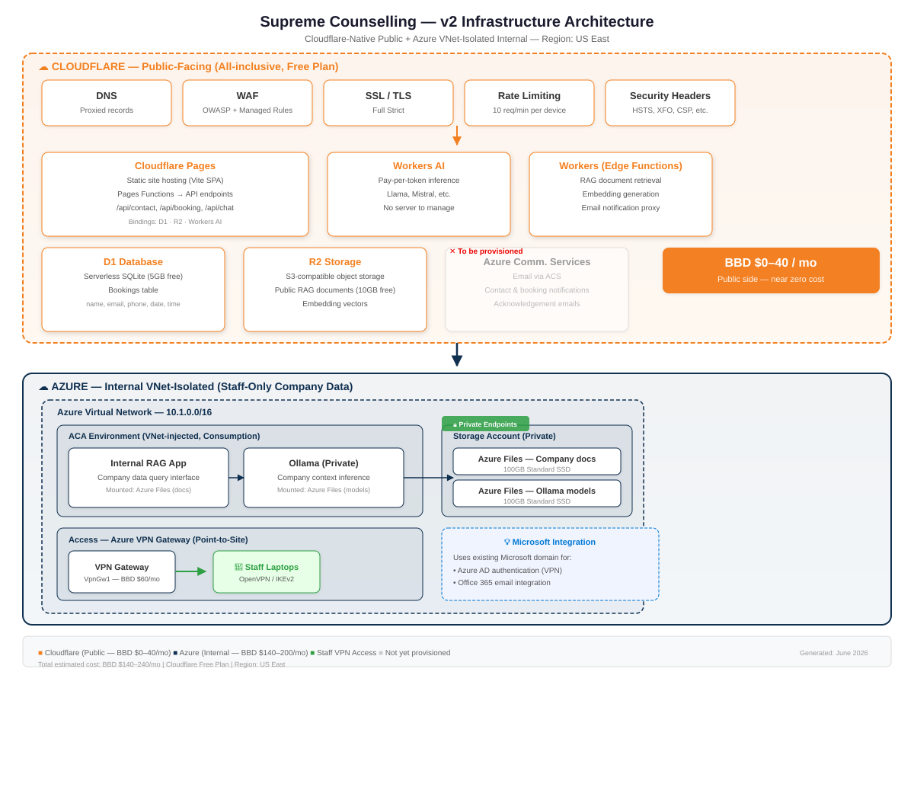

Supreme Counselling
for Personal Development
Infrastructure Proposal — v2
Cloudflare-Native Public + Azure Internal (Staff Company Data)
Cloudflare Pages + Workers + D1 + R2
Azure ACA + VNet + VPN
BBD $0–40/mo
Public-facing (Cloudflare)
Pages · Workers · D1 · R2 · AI
BBD $140–200/mo
Internal (Azure)
ACA · Storage · VNet · VPN
Prepared: June 2026 • Region: US East
Staff access via Azure VPN Gateway (Azure AD auth — uses existing Microsoft domain)
1. Executive Summary
This proposal presents a two-part infrastructure for Supreme Counselling for Personal Development:
- Public-facing — website, bookings, AI chat — runs entirely on Cloudflare's edge platform at near-zero cost
- Internal staff system — company data RAG — runs on Azure inside an isolated VNet, accessed via Azure P2S VPN using the company's existing Microsoft domain for authentication
Public and internal data are kept strictly separate — no shared databases, no complex RBAC. The public side costs ~BBD $0–40/mo. The internal side costs ~BBD $140–200/mo. Total: ~BBD $140–240/mo.
Key design principles:
Separation of concerns • Data sovereignty • Zero fixed server costs for public side • Microsoft AD integration for staff access • No over-engineering
2. Architecture Overview

Figure 1: v2 Architecture — Cloudflare-native public + Azure VNet-isolated internal
Part 1 — Cloudflare (Public-Facing, Free Plan)
- Cloudflare Pages — Vite SPA static hosting (unlimited requests)
- Pages Functions — API endpoints for /api/contact, /api/booking, /api/chat
- D1 Database — serverless SQLite for bookings
- R2 Storage — public RAG documents + embedding vectors
- Workers AI — chat inference (pay-per-token, no server)
- Workers — RAG retrieval, email proxy
- Cloudflare DNS, WAF, SSL, Rate Limiting — edge security
Part 2 — Azure Internal (Staff-Only, VNet-Isolated)
- Azure Virtual Network (10.1.0.0/16) — isolated from internet
- ACA Environment (VNet-injected) — internal containers
- Internal RAG App — company data query interface
- Ollama (Private) — private AI inference on company data
- Storage Account + Private Endpoints — company docs + embeddings
- Azure Files — 100GB for company docs, 100GB for Ollama models
- Azure VPN Gateway (P2S) — staff access using Azure AD (Microsoft domain auth)
3. Cost Breakdown
All prices in Barbadian Dollars (BBD) at the pegged rate: 1 USD = 2 BBD. Based on US East pricing.
Cloudflare (Public)
| Service | BBD/mo |
|---|
| Cloudflare Pages | $0 |
| Cloudflare Workers | $0 |
| Cloudflare D1 (5GB) | $0 |
| Cloudflare R2 (10GB) | $0 |
| Workers AI (pay-per-token) | ~$0–40 |
| DNS / WAF / SSL | $0 |
| Rate Limiting | $0 |
| Subtotal | $0–40 |
Workers AI: ~$0.001–0.003 per query. Light usage stays under $5–10/mo.
Azure (Internal)
| Resource | BBD/mo |
|---|
| ACA — Internal RAG | ~$30 |
| ACA — Ollama (Private) | ~$60 |
| ACA Environment (VNet-injected) | ~$20 |
| Azure Files (Docs + Models, 200GB) | ~$48 |
| Blob Storage (Embeddings) | ~$4 |
| Azure VPN Gateway (VpnGw1) | ~$60 |
| Log Analytics | ~$10–20 |
| Azure Comm. Services | $0 |
| Subtotal | ~$140–200 |
ACA containers scale to zero when idle. Real-world usage often 30–50% lower.
Total estimated cost: BBD $140–240/mo — roughly half what a single ACA-only approach would cost, because the public side is absorbed by Cloudflare's free tier. The internal side's largest fixed cost is the VPN Gateway ($60/mo).
4. Why This Split Makes Sense
| Factor | Public (Cloudflare) | Internal (Azure) |
|---|
| Traffic pattern | Low, bursty, global | Few staff, occasional |
| Cost model | Free tier / pay-per-use | Pay-per-second + fixed VPN |
| Data sensitivity | Low (public info) | High (company confidential) |
| Auth required | None (rate limiting only) | Azure AD (existing Microsoft domain) |
| Network isolation | Edge-only | VNet + Private Endpoints |
| AI model | Workers AI (no server) | Self-hosted Ollama (full control) |
| Maintenance | Zero | Minimal (ACA auto-heals) |
| Staff access | N/A | Azure P2S VPN — staff use Microsoft login |
The Cloudflare public side costs $0 in fixed infrastructure — you only pay for AI compute (Workers AI, pennies per query). The Azure side provides the isolation and control needed for company data, while using the Microsoft domain they already have for authentication — no separate identity system needed.
5. Security & Compliance
Public (Cloudflare Edge)
- DDoS mitigation (any plan)
- WAF — OWASP Top 10, SQLi, XSS
- Full (Strict) SSL/TLS
- Rate limiting — 10 req/min per device
- Security headers — HSTS, XFO, CSP
- SOC 2, ISO 27001, PCI DSS
Internal (Azure VNet)
- Full network isolation (VNet)
- Private Endpoints — traffic never leaves Azure
- Azure AD authentication (VPN) — existing Microsoft accounts
- ACA managed identity — no connection strings
- Secrets as ACA secret references
- SOC 2, ISO 27001, HIPAA aligned
6. Microsoft Ecosystem Integration
Since the company already uses Microsoft (domain, Office 365, email), the internal architecture leverages that:
- VPN authentication — Azure VPN Gateway uses Azure AD. Staff authenticate with their existing Microsoft work credentials — no separate usernames/passwords
- Azure Communication Services — configured with the company's verified domain for sending emails as @supreme-counselling.com
- Managed Identity — ACA containers use Azure AD managed identities, no connection strings in code
- Future-ready — can easily add Azure OpenAI Service if Ollama is insufficient (same Azure AD auth)
Staff don't need to learn anything new — they log into the VPN client with the same Microsoft credentials they use for email. No additional identity infrastructure required.
7. OpenTofu Plan — Resources Provisioned
| Module | Resources |
|---|
| Cloudflare Public | DNS records · Pages project · Pages Functions bindings (D1, R2, AI) · D1 database · R2 buckets · WAF rulesets · Rate limiting rules · SSL redirect · Security headers |
| Azure Internal | Resource group · Virtual Network · Subnets (ACA, PE, Gateway) · ACA environment (VNet-injected) · Container apps (RAG, Ollama) · Storage account · Azure Files shares · Private Endpoints · Private DNS zones · VPN Gateway (P2S, Azure AD auth) · Log Analytics |
Code deployment: Cloudflare Pages + Functions are deployed via Wrangler CLI (or CI/CD). The infra plan creates all bindings — you just run npx wrangler pages deploy.
8. Implementation Plan
| Phase | Action | Effort |
|---|
| 1 | Configure Cloudflare account, verify domain | 1 day |
| 2 | Run OpenTofu for Cloudflare module → Pages, D1, R2, WAF, DNS | 1 hour |
| 3 | Deploy site via Wrangler: npx wrangler pages deploy ./dist | 1 hour |
| 4 | Write Pages Functions (API endpoints using D1/R2/AI bindings) | 1 day |
| 5 | Run OpenTofu for Azure module → VNet, ACA, Storage, VPN | 2–3 hours |
| 6 | Configure Ollama on ACA + mount Azure Files | 2 hours |
| 7 | Provision Azure Communication Services + configure email sending | 1–2 hours |
| 8 | Staff onboarding — VPN client + Microsoft login | 2 hours |
| 9 | End-to-end testing (bookings, chat, internal RAG) | 1 day |
Total estimated setup time: 3–5 days — most of this is writing the application code (Workers Functions). Infrastructure provisioning is under a day.
Appendix: Comparison to Original Azure-Only Design
| Original (Azure-only) | v2 (Cloudflare + Azure) |
|---|
| Public hosting cost | ~BBD $90–120/mo (ACA) | BBD $0–40/mo (Cloudflare) |
| Internal cost | ~BBD $180–280/mo | ~BBD $140–200/mo |
| Total | ~BBD $270–400/mo | ~BBD $140–240/mo |
| AI inference | Self-hosted Ollama | Workers AI (public) + Ollama (internal) |
| Server management | Containers to maintain | Zero for public; minimal for internal |
| Staff auth | VPN certs or Azure AD | Azure AD (existing Microsoft accounts) |
| Data isolation | Separate storage | Separate storage + separate provider |